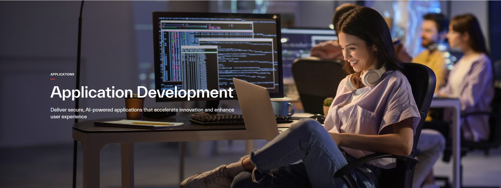
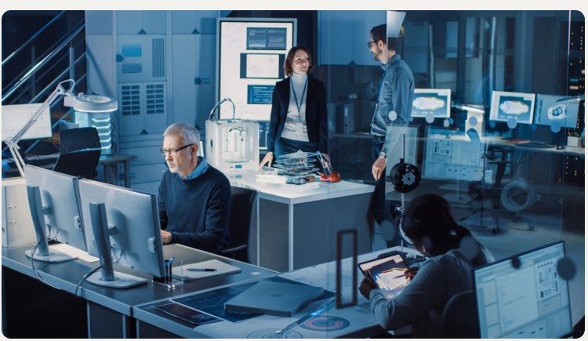

Applications
Design, modernize and manage applications that make work simpler, safer and more responsive.
Explore service ↗Explore our seven service areas across applications, AI and data, cloud, cyber resilience, digital workplace, mainframe and networks. Each engagement is shaped around your priorities, existing environment and operational needs.
Click a service to explore its capabilities, outcomes and approach.

Design, modernize and manage applications that make work simpler, safer and more responsive.
Explore service ↗Unlock useful insights and responsible AI capabilities to help your teams make better decisions.
Explore service ↗Plan, migrate and operate cloud platforms with security, reliability and cost awareness at the centre.
Explore service ↗
Strengthen security, prepare for disruption and help critical technology recover with confidence.
Explore service ↗
Enable secure collaboration, better employee experiences and productive digital ways of working.
Explore service ↗Support mainframe assessment, integration and modernization planning while respecting critical workloads.
Explore service ↗Design secure, resilient connectivity for cloud, applications, users and distributed environments.
Explore service ↗Tell us what you are trying to achieve and we can discuss a practical next step.